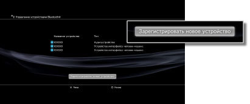

Настройки > Настройки дополнительных устройств > Управление устройствами Bluetooth®
Управление устройствами Bluetooth®
Регистрация (создание пары) устройства Bluetooth®, совместимого с системой PS3™, и управление устройствами Bluetooth®, подключенными к системе.
Регистрация устройства Bluetooth®
1. |
Подготовьте устройство Bluetooth® и код доступа. |
|---|---|
2. |
Выберите |
3. |
Выберите [Управление устройствами Bluetooth®]. |
4. |
Выберите [Зарегистрировать новое устройство].  |
5. |
Выберите [Начать сканирование]. |
6. |
Выберите устройство, которое вы хотите зарегистрировать (создать пару) в системе PS3™. |
 (Настройки) >
(Настройки) >  (Настройки дополнительных устройств).
(Настройки дополнительных устройств).Подсказки
- Если уже зарегистрировано максимальное количество беспроводных контроллеров, удалите неиспользуемые из списка зарегистрированных устройств, чтобы освободить место для нового устройства Bluetooth®.
- Дополнительная информация об устройстве Bluetooth® находится в документации к нему.
Управление устройствами Bluetooth®
Сведения об устройствах Bluetooth®, подключенных к системе PS3™, подключение и отключение таких устройств. Для этого выберите устройство, нажмите кнопку  и выберите нужные пункты в меню параметров.
и выберите нужные пункты в меню параметров.